Anschauen unter
ai.reneborner.de
die größte und letzte Innovation der Menschheit?
Methodik
Viele Fachbücher zur Literaturübersicht:
- Artificial Intelligence - A modern Approach
- Life 3.0: Being Human in the Age of Artificial Intelligence
- Artificial Intelligence and Machine Learning for Business: A No-Nonsense Guide to Data Driven
Technologies
Definition
Unterscheidung zwischen starker und schwacher AI
Schwache | narrow AI
Starke | general AI

Neuronales Netz & deep learning
Literaturverzeichnis
- 27.08.2017 von
Julian Moeser: https://jaai.de/starke-ki-schwache-ki-was-kann-kuenstliche-intelligenz-261/